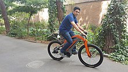
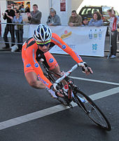

These innovations have continued with the advent of modern materials and computer-aided design, allowing for a proliferation of specialized bicycle types, improved bicycle safety, and riding comfort.
Bicycles can be categorized in many different ways: by function, by number of riders, by general construction, by gearing or by means of propulsion. The more common types include utility bicycles, mountain bicycles, racing bicycles, touring bicycles, hybrid bicycles, cruiser bicycles, and BMX bikes. Less common are tandems, low riders, tall bikes, fixed gear, folding models, amphibious bicycles, freight bicycles, recumbents and electric bicycles.Unicycles, tricycles and quadracycles are not strictly bicycles, as they have respectively one, three and four wheels, but are often referred to informally as "bikes" or "cycles".
A bicycle stays upright while moving forward by being steered so as to keep its center of mass over the wheels. This steering is usually provided by the rider, but under certain conditions may be provided by the bicycle itself. The combined center of mass of a bicycle and its rider must lean into a turn to successfully navigate it. This lean is induced by a method known as countersteering, which can be performed by the rider turning the handlebars directly with the hands or indirectly by leaning the bicycle. Short-wheelbase or tall bicycles, when braking, can generate enough stopping force at the front wheel to flip longitudinally. The act of purposefully using this force to lift the rear wheel and balance on the front without tipping over is a trick known as a stoppie, endo, or front wheelie.

The bicycle is extraordinarily efficient in both biological and mechanical terms. The bicycle is the most efficient human-powered means of transportation in terms of energy a person must expend to travel a given distance. From a mechanical viewpoint, up to 99% of the energy delivered by the rider into the pedals is transmitted to the wheels, although the use of gearing mechanisms may reduce this by 10–15%. In terms of the ratio of cargo weight a bicycle can carry to total weight, it is also an efficient means of cargo transportation.
A human traveling on a bicycle at low to medium speeds of around 16–24 km/h (10–15 mph) uses only the power required to walk. Air drag, which is proportional to the square of speed, requires dramatically higher power outputs as speeds increase. If the rider is sitting upright, the rider's body creates about 75% of the total drag of the bicycle/rider combination. Drag can be reduced by seating the rider in a more aerodynamically streamlined position. Drag can also be reduced by covering the bicycle with an aerodynamic fairing. The fastest recorded unpaced speed on a flat surface is 144.18 km/h (89.59 mph) In addition, the carbon dioxide generated in the production and transportation of the food required by the bicyclist, per mile traveled, is less than 1/10 that generated by energy efficient motorcars